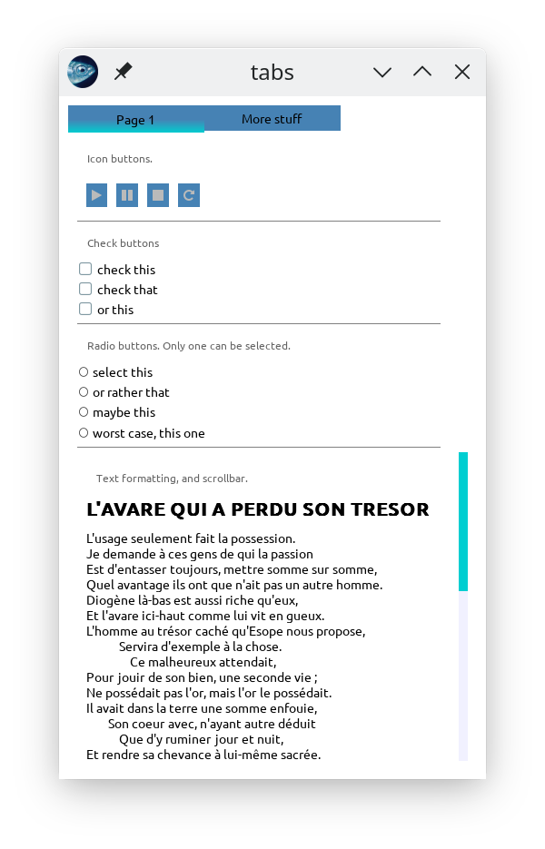
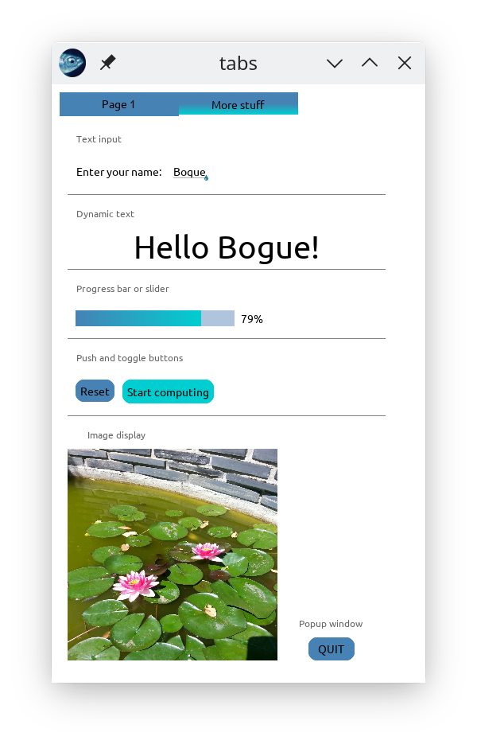

Bogue is an all-purpose GUI (Graphical user interface) library for ocaml, with animations, written from scratch in ocaml, based on SDL2.
Programming with bogue is easy if you’re used to GUIs with widgets, layouts, callbacks, and of course it has a functional flavor. It uses Threads when non-blocking reactions are needed.
open Bogue
let () =
Widget.label "Hello world"
|> Layout.resident
|> Bogue.of_layout
|> Bogue.runWidgets are the building bricks, responsible for graphic elements that respond to events (mouse, touchscreen, keyboard, etc.).
For a more “functional” use, they can be “connected” instead of reacting with callbacks (see examples).
widgets can be combined in various ways into layouts. For instance, a check box followed by a text label is a common layout.
Several predefined layouts are available:
Layouts can be animated (slide-in, transparency, rotation). All layouts can be automatically resized when the user resizes the window. Timeouts are available to execute arbitrary actions after a delay.
| demo, tab1 | demo, tab2 |
|---|---|
|  |  |
See here for the source code of this demo.
It’s the easiest way unless you want to try out the development version.
opam install bogueThat’s it. But, if you want to stay in sync with the latest developement, you can directly “pin” the github repository:
opam pin add https://github.com/sanette/bogue.git(Then update/upgrade opam). And this can easily be undone with
opam unpin https://github.com/sanette/bogue.gitYou need a working ocaml installation with opam, see the ocaml doc. Then, make sure you have dune, tsdl, tsdl-image and tsdl-ttf:
opam install dune tsdl tsdl-image tsdl-ttfDownload the git archive, unzip it, cd into the bogue-master dir, and then:
dune build
opam install .https://ci.ocamllabs.io/github/sanette/bogue
It’s good to first have a look at Bogue’s general principles.
The public API can be found here.
You should first try a minimal example.
The examples directory contains more sophisticated examples. If you installed the bogue package with opam (as described above), these examples are available via the boguex program. For instance, run examples 34 and 41 by:
boguex 34 41Type boguex -h to have the list of all examples.
See here.